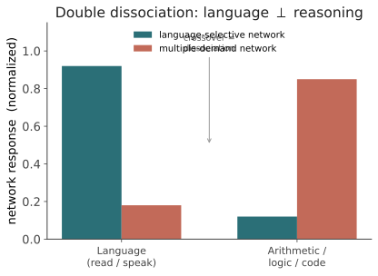

本页目录
心智 II · 语言与思维的关系
对标：Fedorenko 等（语言网络分离，Nature 2024 综述）、Fodor《The Language of Thought》、Lupyan & Bergen、Boroditsky（现代 Whorf）、Vygotsky（内部言语）｜ 前置：mind-01、civ-03 ｜ 证据地位：分离证据【实】（神经影像 + 失语症），如何解读【争】（轴 II 主战场）。 这是全课的核心张力页，也是你研究课题的最佳入口。机器这边：语言预测长出广谱能力（甲）。人脑这边：Fedorenko 的证据说语言网络与推理网络是分离的。同一个"语言↔智能"，机器与人脑给出看似相反的答案。这条缝，值得你一辈子盯着。
1. 三种立场（轴 II 的谱）
"语言和思维什么关系"，历史上三大立场（这是导论轴 II 的展开）：
- 语言 = 思维（强 Whorf / 语言决定论）：没有语言就没有（某类）思维；语言的范畴决定你能想什么。——强版几乎无人再持。
- 思维 ⊃ 语言（Fodor 思维语言）：思维发生在一种非自然语言的内部符号系统"mentalese"里，自然语言只是表达思维的外壳。思维先于且独立于语言。
- 语言 ⇄ 思维（互动 / 共演化）：语言是认知工具，塑造、增强、但不决定思维；两者反馈互动（承 civ-01 共演化、civ-03 认知卸载）。——当代证据最支持的中间地带。
本页的任务：用神经证据给这三条立场称重，你会看到答案是分裂的——取决于你说的"思维"是哪种。
2. 硬证据：语言网络 ⊥ 推理网络（Fedorenko）
Fedorenko 团队二十年的核心发现（本页的心脏，较硬的【实】）：大脑里有一个语言选择性网络（左额颞），它——
- 对语言（理解/产出、口语手语皆可）强烈激活；
- 对非语言的高级认知任务几乎不激活：算术、逻辑推理、音乐、程序代码、心智理论、物理直觉——这些主要由另一套网络（多需求网络 multiple-demand 等）承担。

更强的证据来自失语症（aphasia）：某些患者的语言网络严重受损（几乎不能说、不能理解语法），却仍能做算术、下棋、进行逻辑与因果推理、通过心智理论测验。语言几乎全毁，思维大体保留。
推论（Fedorenko 本人的解读）：语言主要是沟通/知识传输的工具，不是人类推理本身的载体或引擎。推理可以在没有语言在线的情况下进行。这直接顶撞"语言=思维"，也给"思维⊃语言"（Fodor 式）加了砝码。
3. 反方：语言仍深刻塑造思维（现代 Whorf）
但故事没完。温和 Whorf（Lupyan、Boroditsky）有同样扎实的证据，说明语言确实塑造某些认知——只是塑造，不是决定：
- 颜色：语言的颜色词边界影响颜色辨别的速度（跨越词界的两色更快区分），且这种效应偏右视野（左脑语言优势侧）。
- 空间参照框架：有的语言用绝对方位（东南西北）而非相对（左右），其使用者的非语言空间记忆与导航策略随之不同。
- 数：缺乏精确数词的语言（如 Pirahã），其使用者在精确大数任务上表现受限——数词可能是精确计数的认知工具（承 civ-02 符号技术）。
- 时间：书写方向、时间隐喻影响对时间的空间化表征（承 ling-04，但效应量与复现有争议）。
怎么和 Fedorenko 调和？ 关键是区分：推理的"运行时" vs 认知工具的"塑造"。Fedorenko 说推理不在语言网络里跑（运行时独立）；Whorf 派说语言训练出的范畴、提供的符号工具，长期地重塑了非语言认知的内容与策略（塑造）。两者可以都对——它们说的是不同的"语言影响思维"。
4. 内部言语与认知卸载：语言作为工具
第三条线索把张力缝合（承 civ-03 §3）：语言即使不是推理的运行时，也可能是不可或缺的工具：
- 内部言语（Vygotsky）：复杂的自我调节、多步规划、"在脑中把问题说一遍"——这些用到内化的语言。失语症保留基础推理，但某些需要符号支架的高阶推理是否受影响，证据更微妙。
- 认知卸载 / 可操作符号：语言把思想离散化、外部化，才能被存储、组合、批判、传给集体（civ-02/03）。没有语言，个体推理也许还在，但可累积、可传递、可自我审视的那种智能撑不起来。
这给乙问一个精细答案：语言对人类智能可能是—— - 非构成性的，对基础推理（Fedorenko：推理不需要语言在线）； - 构成性的，对可传递、可累积、可自我审视的高阶/集体智能（civ-03 的接口论）。 "语言是否构成人类智能"的答案取决于你指哪种智能——这本身就是研究成果，不是含糊其辞。
5. 回到核心张力：机器 vs 人脑
现在把两侧摆到一起，这是你研究的入口图：
| 机器（LLM） | 人脑 | |
|---|---|---|
| 语言与能力 | 语言预测 长出 广谱能力（推理、代码、数学） | 语言网络 ⊥ 推理网络（Fedorenko） |
| 推理载体 | 就在同一个"预测语言"的网络里涌现 | 主要在非语言网络 |
| 解读 | 也许"语言"里编码了足够多世界结构，预测它就被迫学会推理（甲、线六） | 语言是获取/传输通道，推理另有硬件 |
这条缝怎么读？三种可能，都值得追： 1. 殊途同归：机器把推理"塞进"语言网络，是因为它只有这一个网络（架构所迫）；人脑把两者分开，是演化的模块化。同一种能力，不同的封装。 2. 机器的"推理"名不副实：LLM 的"推理"也许更接近语言模式匹配，而非人脑那种语言无关的抽象推理——这解释了它为何在某些分布外推理上脆弱（线六 ai-02）。 3. 人脑低估了语言：也许语言在发育中塑造了那个"独立"的推理网络（civ-02 识字重写大脑），只是成年后运行时不再需要语言在线——分离是"脚手架拆除后"的快照。
6. 要点与思考
思考 1（这是你的题） 用户你最初的直觉是"语言促成人类意识与智能"。Fedorenko 的证据是对这个直觉最尖锐的挑战：至少基础推理，语言并不构成它。但这不是否定，是精化——它把"语言促成智能"逼成"语言促成哪一种智能、在哪个尺度（运行时 vs 发育 vs 集体）"。把宽命题磨成这三个可分别研究的版本，就是这一页的全部价值。
思考 2（别让机器类比蒙住人脑） LLM 在一个网络里"语言与推理不分"，极易诱导你以为人脑也如此。Fedorenko 提醒：人脑偏偏分开了。 所以"LLM 怎样"不能直接推"人怎样"（承 mean-02 数据效率、mind-01 冷水）。机器是启发，不是证据——这条纪律，保你不掉进本领域最深的坑。
思考 3（可做的实证） 比较人类失语症患者与"被消融了某些能力的 LLM"在同一批推理任务上的失败模式；或探查 LLM 内部"语言处理"与"推理"子回路是否可分离（机制可解释性，线六 ai-03）。若 LLM 内部也能分出'语言层'与'推理层'，核心张力就被撬开一道口——这是当前极前沿、且你够得着的问题。\(\blacksquare\)
下一页：心智 III——自由能与意识。线五的最后一站，也是全课思辨浓度最高处。自由能原理想用一个方程统一预测脑，但它的经验地位争议极大；意识是否需要语言，多数理论说不需要。这一页我们摆立场、划裁判，明确标【争·思】，绝不冒充结论。